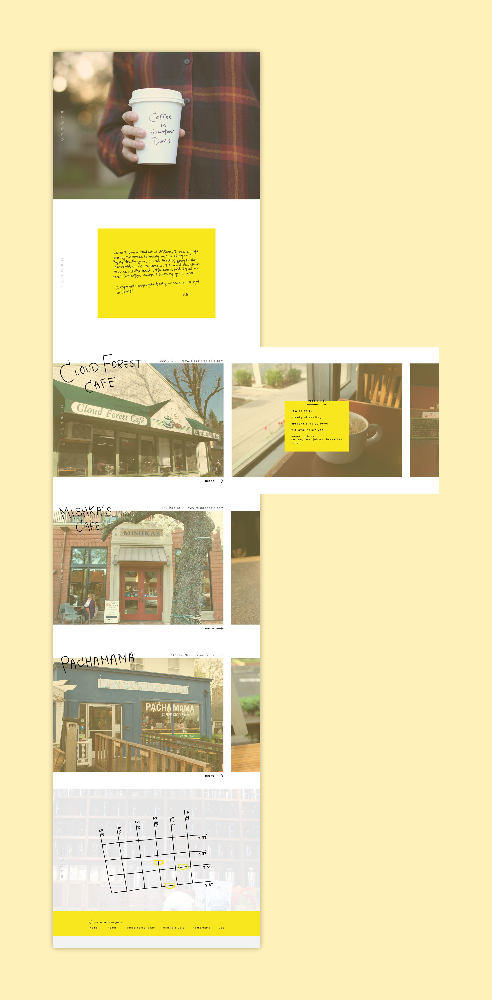

Coffee in Davis
(web design)
An informational website introducing the local cafe options in the city of Davis.
Preliminary Prototype


Final Prototype
With the final iteration, I wanted to keep the focus on the images, while incorporating handwritten text to mimic that in the home-page image. Rather than using opaque overlays to contain the text, I decided to use a solid yellow background to mimic the feel of a post-it note. The yellow tint, consistent across all images, exudes a bohemian mood and helps to tie all the pages together.
